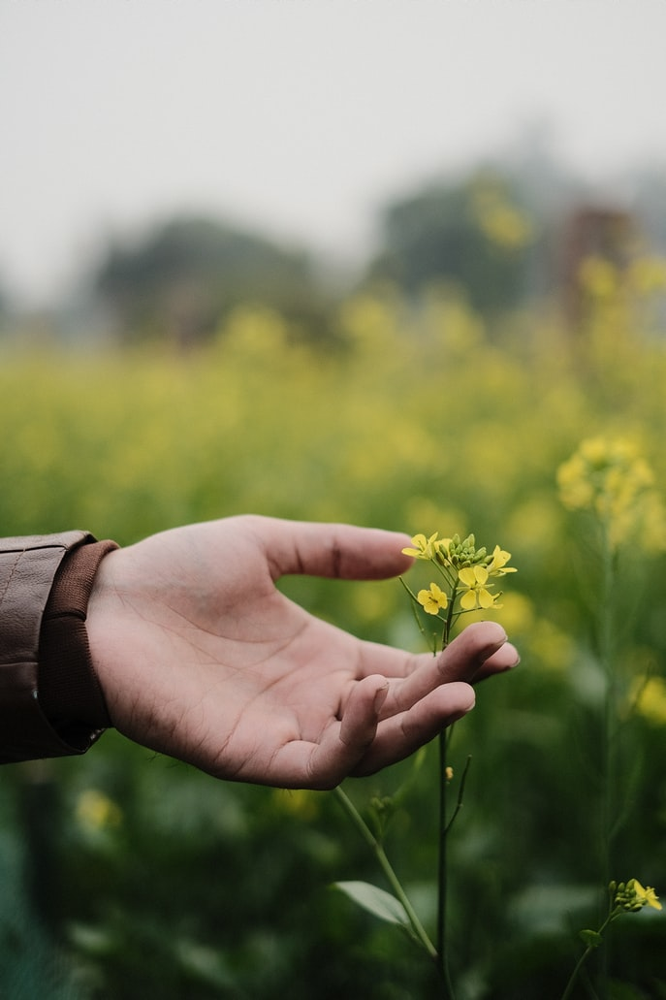

GREEN FUTURE NGO
дэлхийн ногоон хөгжилийн талаар хийх миний сайт
Site purpose
Our focus is agricultural livelihoods, environmental conservation, training and development, traditional authorities support and emergency response and campaigns.
Everything in the world is green or natural and strives for a harmless good.
Let's work together for the future of our children and future generations to love the earth with all our hearts and live in a clean and healthy environment.
What we do
-Food Security and Nutrition Programs
-Farmer Enterprise Development
-Agro-Processing
-Product and Brand Development
logo
дэлхийн ногоон хөгжилийн талаар хийх миний сайт